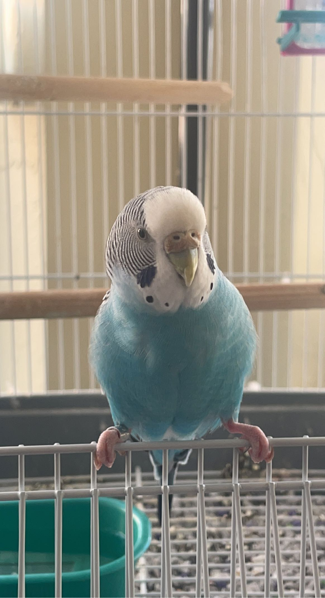

<!DOCTYPE html>
<html lang="en">
<head>
    <meta charset="UTF-8">
    <meta name="viewport" content="width=device-width, initial-scale=1.0">
    <title>Document</title>
</head>
<body>

</body>
</html>
    <header><nav>
        <div>
        <a href="index.html"> Home</a> | <a href="about.html">About</a></nav><header></header>
        </div>
        <div>
        <a href ="#background">Skip to Background</a> |
        <a href ="#skills and learning">Skip to Skills and Learning</a> |
        <a href ="#interests">Skip to Interests</a> |
        <a href ="#goals">Skip to Goals</a> |
        </div>
        <p></p>
        <p></p>

        </nav>
    

    <main>

   
<h2>About Me</h2>

<section>
<h3 id="background">Background</h3>

<p>I am from Flower Mound, Texas and graduated from Flower Mound High School. I have lived in Texas for 15 years. Before that, I lived in Minnesota from the ages 1-4, and before that I was born in North Carolina and lived there for one short year. I have one older sister who lives in Virginia, which is where a lot of my Mom's family lives. We usually travel to Washington D.C. because they live in cities very close by, and I enjoy spending time with family there - especially with my sister. </p>
   
</section>
<!-- the paragraph below includes bold formatting  -->


</section>
<h3 id="skills and learning">Skills and Learning</h3>

    <p>I am studying <strong>Business Information Systems</strong> with a minor in Digital Culture & Data Analytics. I enjoy learning about digital transformation and how automation can support a business or individual. I also would like to master data analytics and be able to communicate data to others. I want to also expand my knowledge on different coding languages; the one I feel most confident with at the moment is SQL, but I want to be able to use a variety of languages.<p>

</section>

<!-- the next paragraph includes italics -->

</section>
<h3 id="interests">Interests</h3>
    <p>Aside from my studies, I enjoy spending time with friends and being active. I love working out, playing basketball, going for a walk, animals - especially my own, my pet bird <em>Zuzu</em>. I am also a resident assistant on campus where I get to meet a lot of different types of students and make all kinds of connections.


    <figure align="center">

     

    <figcaption>Zuzu</figcaption>

    <p>My other campus involvement includes being a member of Delta Sigma Pi (Business Fraternity), Frog Army (basketball spirit club), and the Sports Management Club. I attend most of the TCU athletics games and always look to find fun things to do on campus. </p>

    </figure>
 </section>
 </section>
<h3 id="goals">Goals</h3>
    By the end of this class, my goal is to discover an area of DCDA that I am interested in that I had not considered before and pick up on the skills necessary to fulfill that area. Another goal of mine is to step into my job bringing something new to the table, not just simply repeating what others have already done.

</section>

   <iframe width="560" height="315" src="https://www.youtube.com/embed/NwQN8skyPJ4?si=sJzoMJ6kuQoiMHuC" title="YouTube video player" frameborder="0" allow="accelerometer; autoplay; clipboard-write; encrypted-media; gyroscope; picture-in-picture; web-share" referrerpolicy="strict-origin-when-cross-origin" allowfullscreen></iframe>


    <main>
    </body>
    </html>
